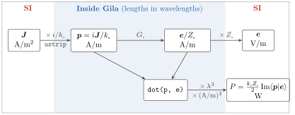

Physical Units
Nothing in Gila carries units. Lengths are measured in wavelengths, fields are stored divided by $Z_\circ$, and every operator is dimensionless. Gila does not depend on Unitful.jl either, so it is up to us to put the units on before calling Gila and to take them off again afterwards. Here we do that for a small radiating current at $λ = 1$ µm, with the current density in A/m², the field in V/m and the radiated power in W, and we check the power against the textbook dipole formula. The figure below summarizes the conversions we make along the way.

using GilaElectromagnetics, LinearAlgebra, Unitful
Z₀, ε₀, c = Unitful.Z0, Unitful.ε0, Unitful.c0;Units in Gila
The current Gila works with is $\vb*{p} = i\vb*{j}/k_\circ$ (eq. 1.2) rather than $\vb*{j}$ itself. In a material it is $c\vb*{P}$, the dipole density times $c$. Its field is $\vb*{f} = (\vb*{e}, Z_\circ\vb*{h})$, and Gila stores $\vb*{f}/Z_\circ$ (convention 4.3), so a current and its field have the same units (table 2). The material input is the susceptibility $χ$, which is also dimensionless.
The theory pages work with Fourier transforms, which carry an extra second ($\vb*{p}$ in A s m⁻¹). At a single frequency it is simpler to read the same equations with phasors, $\vb*{j}(\vb*{r}, t) = \Re[\vb*{J}(\vb*{r})e^{-iωt}]$ (the time convention of appendix A), with $\vb*{J}$ the peak amplitude in A m⁻². Then $\vb*{p}$ is in A m⁻¹, $\vb*{e}$ in V m⁻¹, and time averages pick up a factor $1/2$.
Choosing the Wavelength
Gila never sees the wavelength, since everything it handles is measured in it (convention 1.1), so we fix it first and convert everything else with it. At $λ = 1$ µm the frequency is
λ = 1u"µm"
k₀ = 2π / λ
uconvert(u"THz", c / λ)299.792458 THzOur source is a cube a sixteenth of a wavelength on a side, meshed with 8 cells per side. Cell sizes are exact Rationals in wavelengths, and cube.scl holds them.
n = 8 # cells per side
cube = GlaVol((n, n, n), (1//128, 1//128, 1//128))
a = n * cube.scl[1] * λ # side of the cube
uconvert(u"nm", a)125//2 nmWe write cell sizes as exact fractions of λ. Going through metres and rationalize does not work so well, because the float division lands a few ulps off and rationalize keeps them. A fifth of 633 nm comes back as
λ_HeNe = 0.633u"µm"
ratio = ustrip(u"m", λ_HeNe / 5) / ustrip(u"m", λ_HeNe)
rationalize(ratio)554289184907138//2771445924535691If the geometry comes in physical units, we keep it exact all the way with integers or rationals, and Unitful then returns an exact fraction.
uconvert(NoUnits, 30u"nm" / (7//10)u"µm")3//70Setting the Current
A uniform current density along $z$ fills the cube. Gila wants $\vb*{p} = i\vb*{J}/k_\circ$, and ustrip converts it to A/m and throws if the dimensions are wrong (so if we forget the $1/k_\circ$ we find out right away).
J = 1e12u"A/m^2"
z = 3 # index of the z component
p = zeros(cube)
regionview(p, 1)[:, :, :, z] .= ustrip(u"A/m", im * J / k₀);The Radiated Field
G₀ * p returns $\vb*{e}/Z_\circ$ in the units we put $\vb*{p}$ in, so to get volts per metre we multiply by $Z_\circ$ (the step that is easiest to forget). With 8 cells per side there is no middle cell, so we look at cell $(4, 4, 4)$, which has a corner at the center of the cube.
G₀ = VacuumGreenOperator(cube)
e = G₀ * p
mid = n ÷ 2
e_mid = regionview(e, 1)[mid, mid, mid, z] * u"A/m"
uconvert(u"V/m", Z₀ * e_mid)(-191321.81367402998 - 1.8853212478309378e7im) V m^-1This is almost purely imaginary, i.e., 90° out of phase with the current. That part is the near field, which stores energy and hands it back every cycle, and only the small part in phase with the current carries power away.
Radiated Power
The time-averaged power a current gives to the field is $P = -\tfrac{1}{2}\Re\int \vb*{E}\cdot\vb*{J}^* \dd{V}$. With $\vb*{E} = Z_\circ\vb*{e}$ and $\vb*{J} = -ik_\circ\vb*{p}$, this is
\[P = \frac{k_\circ Z_\circ}{2}\Im\braket<p|e>.\]
dot weights by $ΔV$ in $λ^3$ (convention 3.1), so the physical inner product is dot(p, e) times $λ^3$ times the units of $\vb*{p}$ and $\vb*{e}$ (A/m for both here). Norms work the same way, and norm(f, q) needs a factor of $λ^{3/q}$.
pe = dot(p, e) * λ^3 * u"A/m"^2
P = uconvert(u"W", k₀ * Z₀ / 2 * imag(pe))2.3214203617301204e-5 WA small current element with moment $I\ell = \int J \dd{V} = J a^3$ radiates
\[P_\text{dipole} = \frac{Z_\circ k_\circ^2 \abs{I\ell}^2}{12π}.\]
Iℓ = J * a^3
P_dipole = uconvert(u"W", Z₀ * k₀^2 * abs2(Iℓ) / 12π)
P / P_dipole0.9872212623359999The two don't quite agree, and they shouldn't, because the cube has a finite size. Its far field is the dipole's times the Fourier transform of the cube, and to leading order that costs a factor $1 - (k_\circ a)^2/12$ in power,
1 - (k₀ * a)^2 / 120.9871489526027483which is where Gila lands. Refining the mesh does not move it either, since the power radiated by a uniform cube depends only on the cube and not on how finely we cut it.
Materials
Gila takes the susceptibility $χ = ε/ε_\circ - 1$ (convention 4.3), and there is no $Z_\circ$ in it. For glass with $n = 1.5$,
n_glass = 1.5
ε = n_glass^2 * ε₀
χ = ustrip(NoUnits, ε / ε₀ - 1)1.25This is the number (or the function of position returning it) we pass to ScatteringOperator or SusceptibilityOperator. The scattered current and field that come back follow the same rules as above, with $\vb*{p}$ in the units of the driving current and $Z_\circ$ times $\vb*{f}$ for the field.
Complex Frequencies
Gila also takes a complex frequency $ω = ζck_\circ$ through the frqPhz keyword (convention 4.1), and then scales its matrix elements by $1/ζ^2$ (convention 4.3). Two of the rules above change with it. Write $k = ζk_\circ$ for the complex wavenumber (in this section only). Redoing the derivation of eq. 1.2 with $\vb*{p} = i\vb*{j}/k_\circ$, the field of a current is $\vb*{e}/Z_\circ = ζ^{-1}(k^2 + \nabla\nabla)g\,\vb*{p}$, while Gila returns $ζ^{-2}(k^2 + \nabla\nabla)g\,\vb*{p}$, so the physical field is $ζZ_\circ$ times Gila's output. In a material $\vb*{p} = ζc\vb*{P} = ζχ\vb*{e}/Z_\circ$, and since $\vb*{e}/Z_\circ$ is itself $ζ$ times Gila's field, that is $ζ^2χ$ times what Gila returns. So the susceptibility goes into SusceptibilityOperator or ScatteringOperator as $ζ^2χ$.
To check the field rule, we put a small source one wavelength from a small target, as in the vacuum operator tutorial, and compare $ζ$ times Gila's field with the dipole field at $k$. We are back in Gila's units here, so $k_\circ = 2π$ and the distance is 1.
ζ = 1 + 0.1im
m = 2 # cells per side
source = GlaVol((m, m, m), (1//64, 1//64, 1//64))
target = GlaVol((m, m, m), (1//64, 1//64, 1//64), (1//1, 0//1, 0//1))
p_src = discretize!(zeros(source), r -> (0, 0, 1))
e_ζ = VacuumGreenOperator(target, source; frqPhz = ζ) * p_src
k = 2π * ζ
V_src = m^3 * prod(source.scl) # source volume in λ³
e_dipole = V_src * cis(k) / 4π * (k^2 + im * k - 1) / ζ
e_avg = sum(regionview(e_ζ, 1)[:, :, :, z]) / m^3 # average over the target
ζ * e_avg / e_dipole0.9968237947407534 - 0.0006411516285965959imWhat is left over is the voxel-average factor we saw in the vacuum tutorial, which is close to 1 (without the factor of $ζ$, the ratio would be off by $1/ζ$ instead).
This page was generated using Literate.jl.